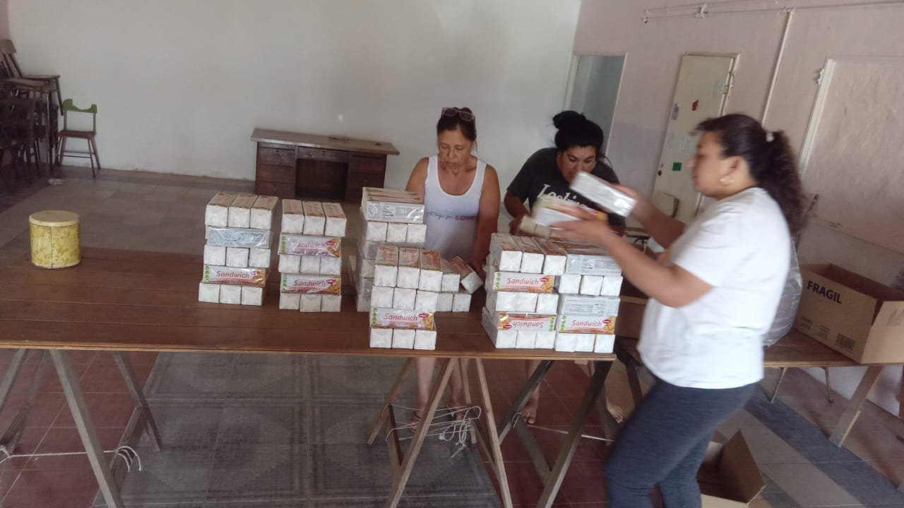
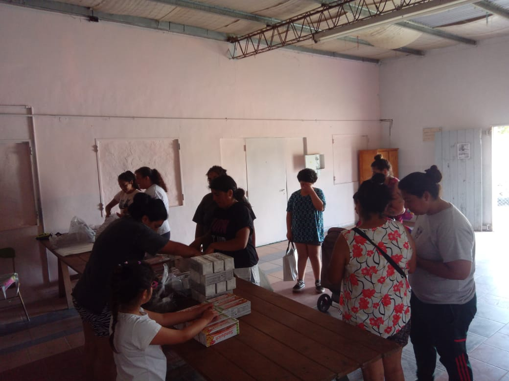
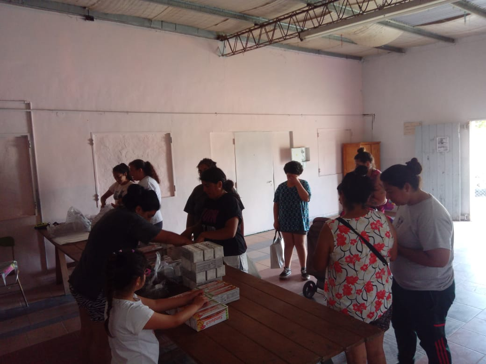
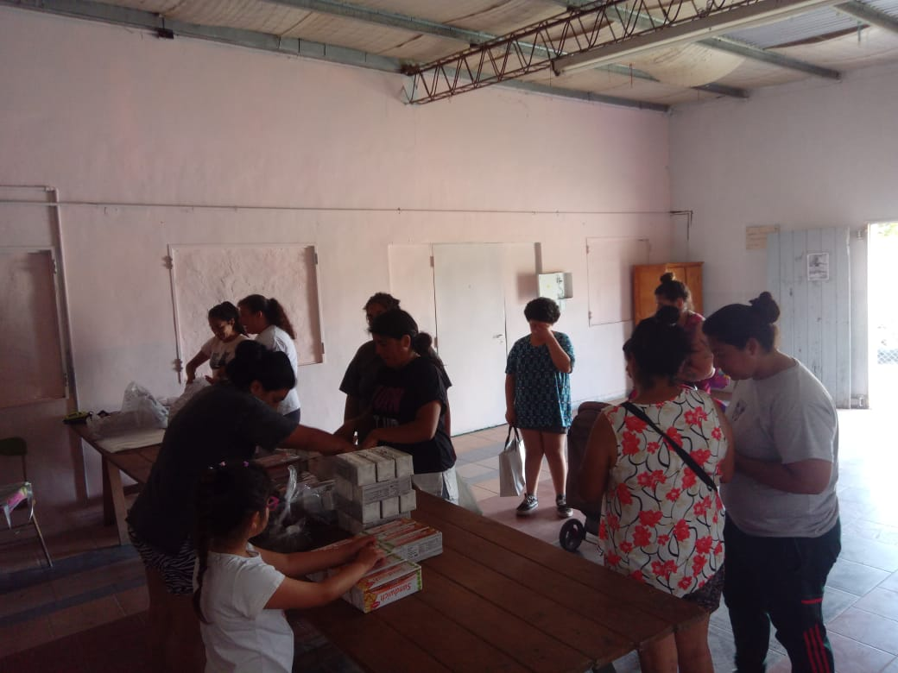
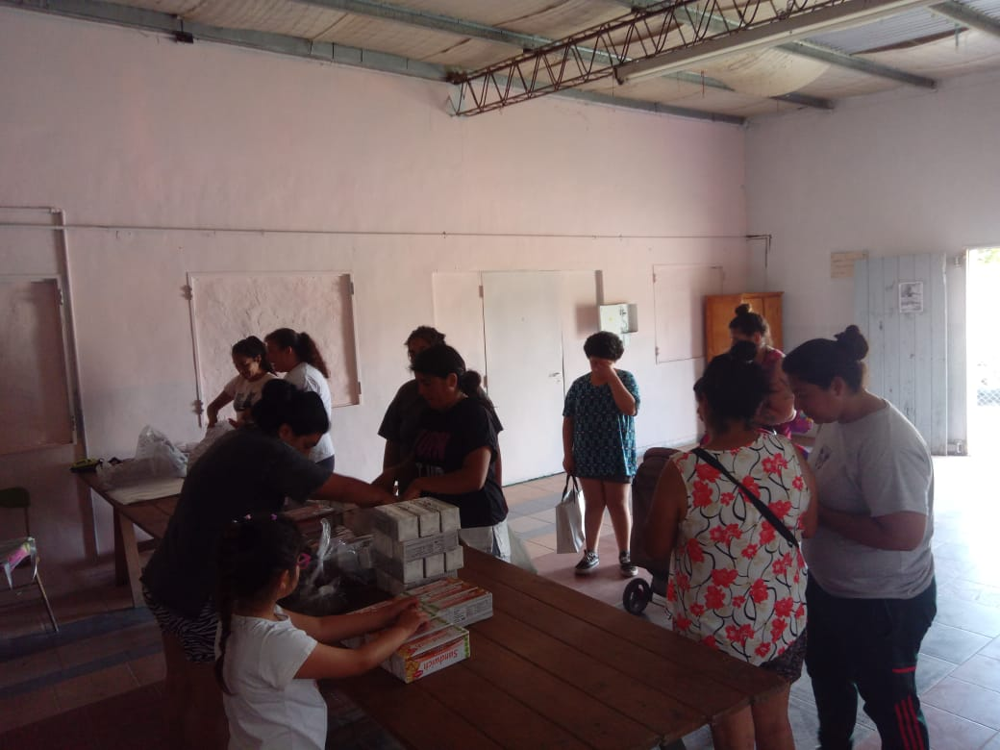

Galería
Vive la experiencia de nuestro comedor a través de imágenes.


 


Un lugar donde la solidaridad transforma vidas. ¡Súmate al cambio!
Cómo Ayudar
En el Merendero las tosquitas, somos un grupo de vecinos comprometidos con nuestra comunidad. Nacimos con el propósito de brindar apoyo a las familias del barrio, ofreciendo un espacio donde los niños puedan disfrutar de una merienda nutritiva y momentos de recreación.
Creemos en la importancia de la solidaridad y trabajamos día a día para crear un entorno seguro, inclusivo y lleno de esperanza. Nuestro objetivo no es solo ofrecer alimentos, sino también promover valores como la empatía, el respeto y el compañerismo.
Gracias a la colaboración de voluntarios, donaciones y el esfuerzo colectivo, seguimos creciendo y marcando la diferencia. Juntos, construimos un futuro mejor para los más pequeños y para toda la comunidad.
¡Te invitamos a ser parte de este proyecto y a sumar tu granito de arena!
Brindamos comidas nutritivas dos veces a la semana.
Ofrecemos desayunos todos los sabados, para que lo puedan disfrutar todos aquellos que deseen asistir.
Todos los alimentos brindados en este espacio estan principalmente basados en donaciones de la comunidad, por lo tanto, no tenemos un menu fijo.
Vive la experiencia de nuestro comedor a través de imágenes.

Consulta nuestros horarios para visitarnos o recibir ayuda.
20:00 PM: Cena
20:00 PM: Cena
08:00 AM: Desayuno
Tu contribución es fundamental. Dona, sé voluntario o difunde nuestra causa.